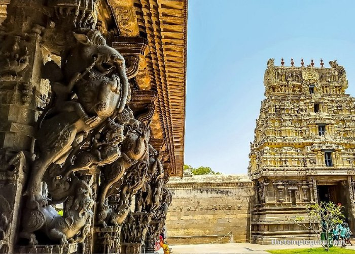

Jalakandeswarar Temple

Jalakandeswarar Temple in Vellore, built in 1550 CE by Vijayanagara chieftain Chinna Bommi Nayaka, is a stunning example of Vijayanagara architecture.
The temple surrounds a Shiva Lingam originally hidden beneath an ant-hill in water, giving the deity the name Jalakandeswarar.
It features an impressive gopuram over 100 feet tall, intricately carved stone pillars, wooden gates, and monolith sculptures.
The temple is uniquely situated in the middle of a water tank and includes shrines to other deities and a notable wedding hall.
It is managed by the Archaeological Survey of India and remains a significant spiritual and historical landmark.